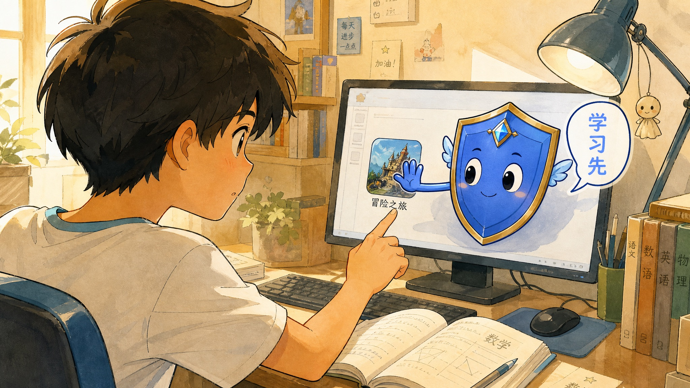
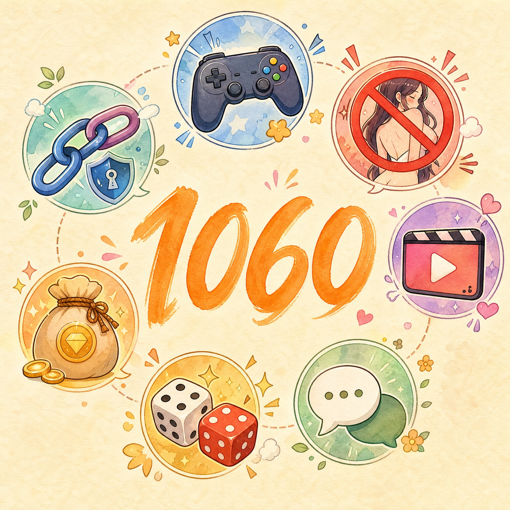
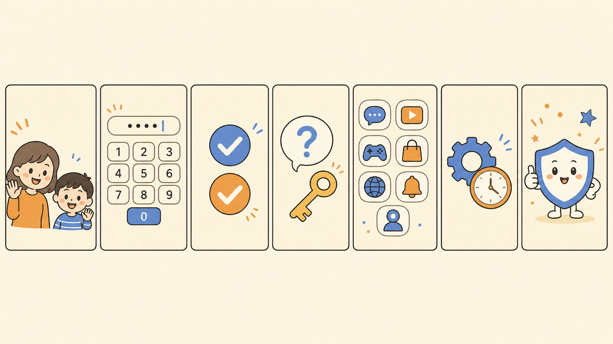
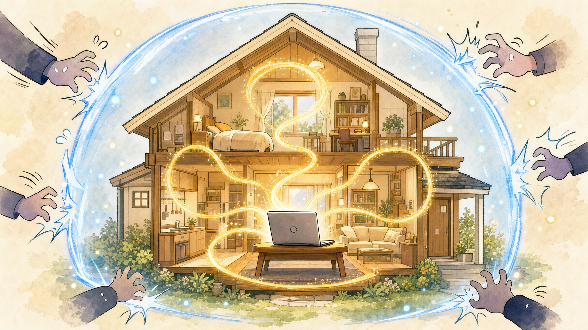

200
games / 游戏类
主流端游 / 页游 / 手游官网及登录入口
Chrome 扩展 · v1.0.0 · 一家三口的小屏障
1060 个内置网站精选黑名单 · 时段锁 · 关键词拦截 · 父母 PIN 守门 · 零数据外传
那一秒发生了什么

不是冷冰冰的 403 页面 - 是一个温柔的盾牌站在那里, 配一句励志语 "今天的努力, 是明天的礼物"。 孩子被拦下时不会被羞辱, 父母也不用解释。
开箱即拦的清单
来自一份手工筛选的中文互联网清单 - 大陆游戏 / 抽卡 / 短视频 / 赌博 / VPN, 都收齐了。
200
games / 游戏类
主流端游 / 页游 / 手游官网及登录入口
220
gambling / 赌博类
境外博彩 / 体彩外围 / 链上赌站

210
adult / 成人内容
成人站 / 暗示性广告引流 / 软色情
150
douyin_like / 短视频流
抖音 / 快手 / 视频号 H5 等沉浸流
130
social_short_video
小红书 / B 站短视频 / 推荐流
100+50
gacha / vpn_proxy
抽卡充值小游戏 + 翻墙代理域名
能力清单
每一项都来自一份 18 条 REQ 的需求规格书, 不是营销话术。
开箱即拦 games / adult / social_short_video / douyin_like / gambling / gacha_recharge / vpn_proxy 七大类。父母不用自己拼名单。
覆盖 Google · Baidu · Bing 三大搜索引擎, 在 URL 层就拦掉敏感词查询, 孩子看不到搜索结果页。
按星期 + 起止时间设规则, 跨午夜 (如 22:00 - 06:00) 正确处理, 60 秒内启用 / 解除, 不依赖前台进程。
4-6 位 PIN + SHA256 + salt, 不存原文; 5 次错锁 5 分钟, 10 次错锁 1 小时; 退出问题找回。孩子打不开管理后台。
popup 显示 7 天 TOP10 拦截 / 访问榜单, 数据全部 chrome.storage.local, 无任何上传, 7 天滚动自动清理。
首次安装自动跳引导页: 介绍 → PIN → 确认 → 退出问题 → 选分类 → 高级 → 完成。普通家长 3 分钟全程走完。
首次安装就是首次理解
没有 PIN 就没有保护; 我们把 PIN 设置做成不可跳过的第一步。每一步都有手绘小图配画外音, 像翻一本说明绘本。


宪法级承诺
不监控. 不上报. 不画像. 这不是营销话术 - 是写进 SOUL.md 的硬约束, 任何违反都是 Bug。
"我承诺三件事: 零外传, 零残留, PIN 不可猜。违反任何一件都属于 Bug。" - KidGuard SOUL.md
3 分钟装好
v1 走 unpacked 安装 - 不上 Chrome Web Store, 没有审核延迟, 也没有隐私政策合规成本。
从 GitHub clone 或下载 zip:
git clone https://github.com/lukeliu95/kid-guard.git
cd kid-guard跑 build 脚本, 输出 extension/dist/:
bash extension/build.sh打开 chrome://extensions, 右上角开"开发者模式", 点"加载已解压的扩展程序", 选 extension/dist/ 目录。
扩展自动跳到引导页 - 设 PIN + 退出问题 + 选拦截分类。3 分钟走完, 立刻生效。
常见问题
v1 是家庭自用形态, 上 store 需要写隐私政策 / 走商店审核 / 开发者账号 5 美元一次。我们想优先把功能做扎实再考虑分发渠道。源码完全开放, 任何家长可以自己 load unpacked。
能 - chrome://extensions 页面 MV3 不允许扩展阻止自己被禁用, 这是浏览器机制限制。但孩子要绕过得在父母不在时禁用扩展, 一旦再打开就恢复; 而且 PIN 守住了"改名单 / 关分类", 比 BlockSite 这类只锁卸载的多走一层。这是技术能做的边界, 我们不假装能做更多。
v1 仅支持 Chrome (≥ 113)。Edge 用 Chromium 内核理论可装但未验证。Firefox 的 declarativeNetRequest 实现差异较大, v2 评估再说。
真的。打开 Chrome DevTools → Network 面板, 任意场景下都不会看到 outbound 请求。源码里 grep fetch / XMLHttpRequest / WebSocket 唯一一处是 chrome.runtime.getURL('data/quotes.json') 读本地励志语文件。
PIN 锁屏页有"忘了 PIN"链接, 输入 onboarding 时填的退出问题答案 (例: "妈妈第一辆车的牌子") 就能重设。答错 3 次锁 1 小时。如果连退出问题答案也忘了, 只能在 chrome://extensions 移除扩展再重装 - 历史记录会清空, 这是设计上的代价。
打开扩展 popup → "进入 options" → 输 PIN → "黑名单"标签 → 添加域名。子域名通配自动包含 (如填 example.com 同时拦 m.example.com / www.example.com)。改完立即生效, 不用重启浏览器。
因为这是营销面 vs 产品面的两套语言。落地页要让父母三秒钟感到温暖, 知道这不是冷冰冰的监控工具; 产品本身 (popup / options) 是冷静的工具调, 让父母 30 秒能改完一项设置。两套节奏服务两类瞬间, 不冲突。
Phase D 候选清单: 时间预算 (每天某分类 N 分钟) / 重定向到学习资源 / 卸载报警 / 跨设备同步 / Edge 支持 / Web Store 上架。具体看 docs/requirements-spec.md § 9 Future Considerations。家长说"GEI 产品更新"就会重进 Phase D。